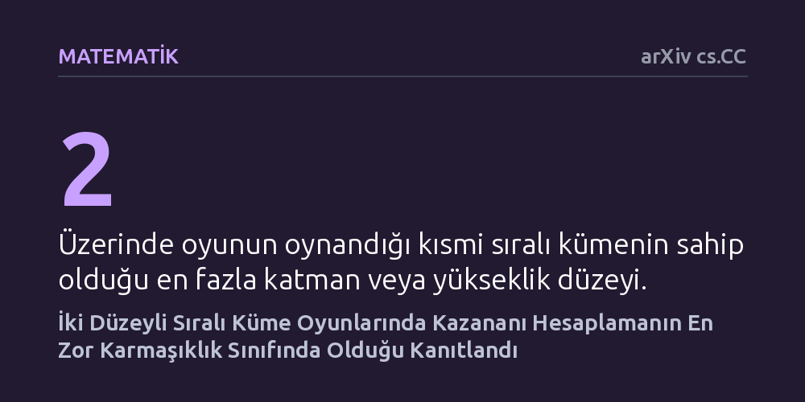

MATEMATIK · arXiv cs.CC · 2026-10-16
On yılı aşkın süredir açık bir problem olan iki katmanlı kısmi sıralı küme oyunlarının hesaplama karmaşıklığı araştırıldı. Araştırmacı, bu yalın kurallı oyunlarda bile kazananı belirlemenin hesaplama açısından son derece zor olan PSPACE-tam sınıfına girdiğini matematiksel olarak kanıtladı.
Çok basit ve sadece iki basamaktan oluşan kurallara sahip oyunların bile genel çözümünün bilgisayarlar için pratik olarak hesaplanamaz derecede zor olabileceğini gösterir.

Günlük hayatta satranç ya da go gibi oyunların karmaşıklığına aşinayız. Taşların çokluğu ve tahtadaki hamle kombinasyonları, oyunun sonucunu önceden kestirmeyi son derece güçleştirir. Ancak kombinatoryal oyun teorisi olarak adlandırılan matematik dalında, kuralları son derece yalın olan oyunlar da incelenir. Bu oyunların en temel sınıflarından birini, elemanları arasında hiyerarşik bir sıralama bulunan kümeler üzerinde oynanan kısmi sıralı küme (poset) oyunları oluşturur. Oyuncular sırayla bir eleman seçer ve seçilen elemanla birlikte onunla ilişkili olanları oyundan çıkarır; son hamleyi yapan oyuncu oyunu kazanır.
Bu tarz oyunların en bilinen örnekleri arasında kibrit çöpleriyle oynanan Nim veya kareli bir çikolata tabletinden parçalar eksiltilen Chomp gibi klasik oyunlar yer alır. İlk bakışta kuralları birkaç saniyede anlaşılan bu tür oyunların, bilgisayarlar tarafından kolayca analiz edilebileceği düşünülebilir. Oysa teorik bilgisayar biliminde uzun süredir bilinen bir gerçek vardı: Üç veya daha fazla katmandan oluşan sıralı kümelerde oynanan oyunların sonucunu belirlemek, hesaplama açısından akıl almaz derecede zordur.
Buradaki temel soru şuydu: Oyun alanını daha da basitleştirirsek ne olur? Yani kümeyi sadece iki basamaktan oluşan, alt ve üst elemanların bulunduğu en yalın hiyerarşiye indirgersek oyun çözülebilir hale gelir mi? On yılı aşkın bir süredir matematikçilerin ve bilgisayar bilimcilerinin cevabını aradığı bu soru, basit kuralların arkasında ne kadar büyük bir karmaşıklığın saklanabileceğini anlamak açısından kritik bir eşikti.
Bilgisayar bilimcileri bir oyunun veya problemin ne kadar zor olduğunu anlamak için genellikle her bir tahta durumunu tek tek denemezler. Bunun yerine indirgeme adı verilen matematiksel bir yöntem kullanırlar. İndirgeme yöntemi, zorluğu zaten ispatlanmış köklü bir matematiksel bilmeceyi alıp, çözülmek istenen yeni oyunun kurallarına adım adım tercüme etme sanatıdır. Eğer bilinen zor bir problemi bu yeni oyuna hızlıca dönüştürebiliyorsanız, yeni oyunun da en az o problem kadar çetin bir ceviz olduğunu kanıtlamış olursunuz.
Bu çalışmada yazar Kengo Hashimoto, mantıksal önermelerin doğruluğuyla ilgili klasik bir zorluk olan Pozitif CNF Formüllerinde Doğrudan Kaçınma (Avoid True on positive CNF formulas) problemini temel aldı. Bu problem, mantık değişkenlerinin belirli kurallar altında değerlendirildiği ve çözümü için pratik bir kestirme yolun bulunmadığı bilinen çetin bir yapıdır.
Yazar, bu mantıksal problemi iki düzeyli kısmi sıralı küme oyununa dönüştüren polinom zamanlı bir indirgeme inşa etti. Yani mantık formülündeki her bir değişken ve kural, iki katmanlı oyun tahtasında belirli elemanlara ve hamle seçeneklerine denk gelecek şekilde matematiksel olarak modellendi. Böylece mantık formülünü çözmekle iki katmanlı oyunu çözmenin teorik olarak eşdeğer olduğu gösterilmiş oldu.
Hashimoto'nun yürüttüğü matematiksel kanıt, on yılı aşkın süredir açık duran bu temel soruya kesin bir nokta koydu: İki düzeyli kısmi sıralı küme oyunları da PSPACE-tam sınıfına aittir. Kuramsal bilgisayar biliminde PSPACE-tam sınıfı, bir bilgisayarın makul miktarda bellek alanı kullanarak çözebileceği, ancak çözüm süresi açısından evrenin yaşını aşabilecek hesaplamalar gerektiren en zor problemleri temsil eder.
Daha önce araştırmacılar, yüksekliği en fazla üç olan sıralı kümelerde oyunun PSPACE-tam olduğunu göstermişti. Ancak katman sayısı ikiye indiğinde, hamle seçenekleri ve elemanlar arasındaki ilişkiler o kadar sadeleşiyordu ki, pek çok araştırmacı bu düzeyde kazananı bulmanın daha kolay bir yolu (örneğin polinom zamanda çalışan hızlı bir algoritma) olabileceğini umuyordu.
Elde edilen bulgu bu umutların yersiz olduğunu gösterdi. Sadece alt ve üst olmak üzere iki basamaktan oluşan bir hiyerarşide bile, bir oyuncunun mutlak kazanma stratejisine sahip olup olmadığını anlamak genel durumda pratik olarak hesaplanamaz durumdadır. Kısacası, katman sayısını ikiye düşürmek oyunu hesaplama karmaşıklığı açısından basitleştirmeye yetmemektedir.
Bu sonucun önemi, oyun tahtasının fiziksel boyutundan ziyade kuralların doğasındaki örtük zenginlikte yatar. Bir problemin PSPACE-tam olması, günümüzün en güçlü süper bilgisayarlarının dahi tahta boyutu biraz büyüdüğünde kazananı belirlemekte çaresiz kalacağı anlamına gelir. Basit gibi görünen iki katmanlı bir yapı, mantıksal karmaşıklığı eksiksiz bir şekilde içinde kodlayabilmektedir.
Yine de bu sonucun ne anlama geldiğini doğru yorumlamak gerekir. PSPACE-tamlık, en kötü senaryodaki tahta yapıları için geçerlidir; yani pratikte insanların oynadığı çok özel ve simetrik bazı iki düzeyli oyunlar hızlıca çözülebilir. Ancak genel sınıfta kestirme bir matematiksel formülün veya hızlı bir algoritmanın var olmadığı artık bilinmektedir.
Sonuç olarak bu çalışma, kombinatoryal oyun teorisinin uzun süredir cevap bekleyen kuramsal bir boşluğunu doldurmuştur. Önümüzdeki süreçte araştırmacıların, bu zorluğu aşmak için oyuna daha özel kısıtlamalar getiren alt sınıfları ve yaklaşık çözüm stratejilerini incelemesi beklenmektedir.